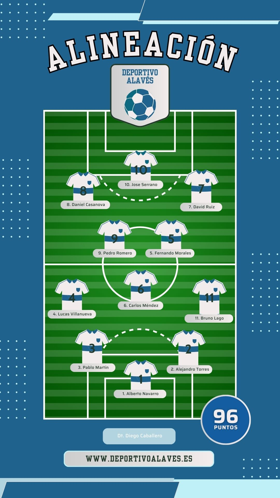
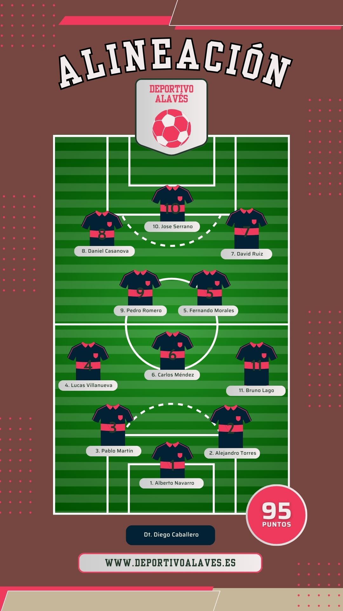

El partido comienza en
¡Entradas a la venta!
Puedes comprarlas en físico en Calle Maliz 10 o en digital en
https://balanzofit.com/Quedan
1000
entradas, ¡hazte con la tuya!
Deportivo Alavés
El Deportivo Alavés busca ganar la final de la Champions en este grandioso derbi tras una grandiosa temporada. Entre sus estrellas encontramos al pichichi de la competición, Samu Omorodion quién viene de marcar hat-trick en las semifinales.

SD Eibar
Por otro lado el Eibar viene de pasar por encima del Milán en las semifinales, dejando un impactante 7-0 global después de la icónica manita que marcaron en San Siro. Sin duda alguna su mejor jugador es Corpás, quién tiene el mayor número de asistencias en toda la competición.
El gran choque entre titanes solo puede dejar un ganador, ¿te lo perderás?